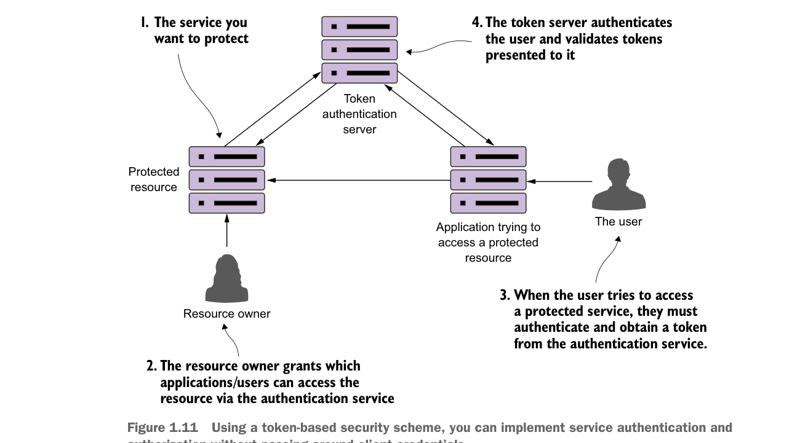

Figure 1.10 shows how these patterns protect the consumer of service from being impacted when a service is misbehaving. I cover these four topics in chapter 5.
1.9.4 Microservice security patterns
I can’t write a book on microservices without talking about microservice security. In chapter 7 we’ll cover three basic security patterns. These patterns are
- Authentication—How do you determine the service client calling the service is who they say they are?
- Authorization—How do you determine whether the service client calling a microservice is allowed to undertake the action they’re trying to undertake?
- Credential management and propagation—How do you prevent a service client from constantly having to present their credentials for service calls involved in a transaction? Specifically, we’ll look at how token-based security standards such as OAuth2 and JavaScript Web Tokens (JWT) can be used to obtain a token that can be passed from service call to service call to authenticate and authorize the user.
Figure 1.11 shows how you can implement the three patterns described previously to build an authentication service that can protect your microservices.

Using a token-based security scheme, you can implement service authentication and authorization without passing around client credentials.